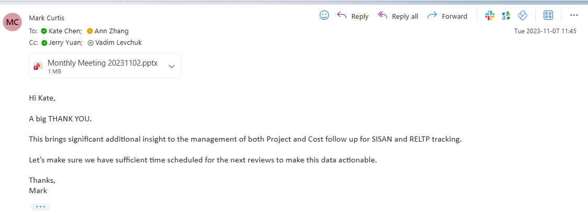
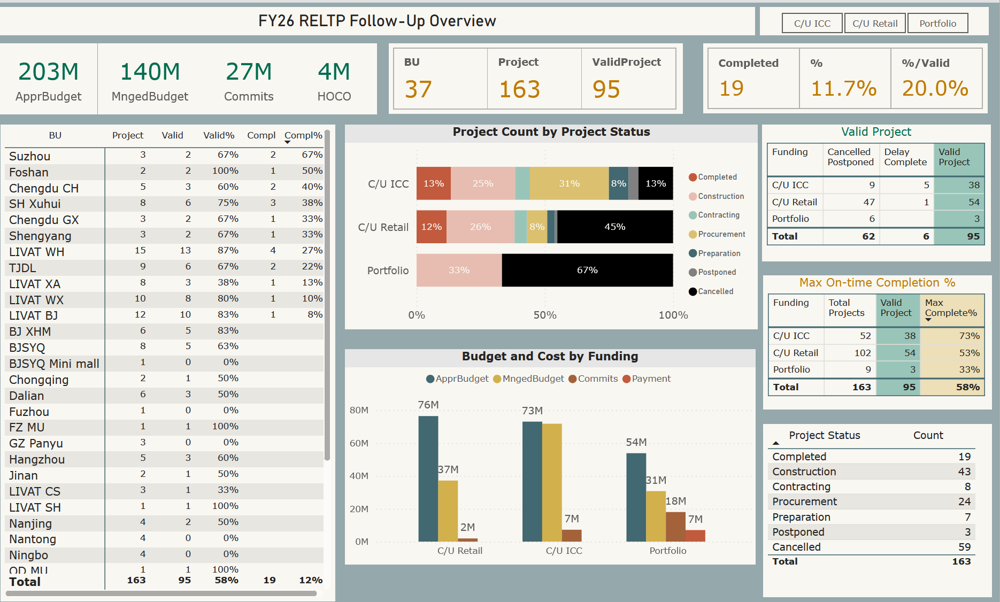
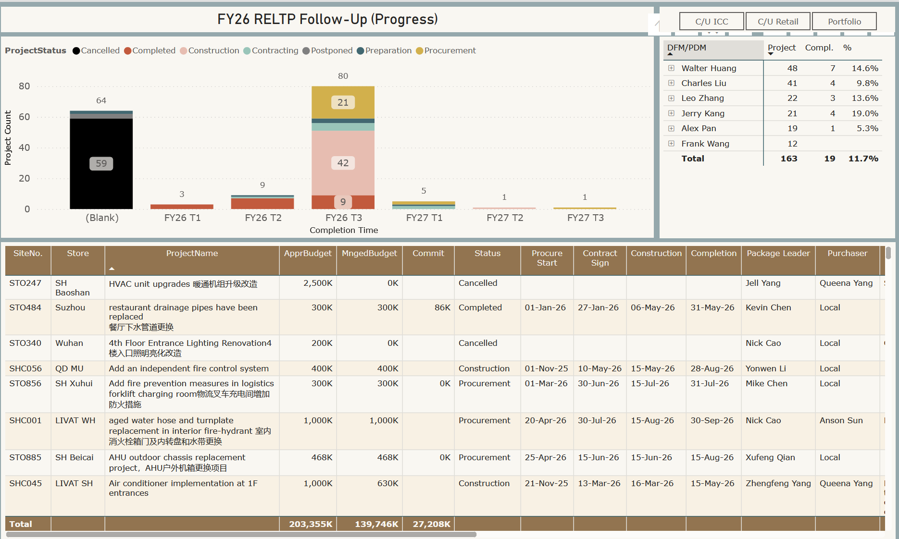
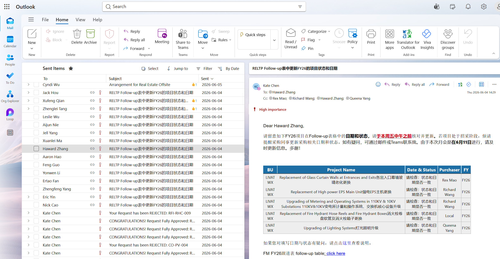

Background
In 2023, I took over a departing colleague's responsibilities with only one week of handover. One of my first tasks was a monthly project progress report for the Property team.
The data sat in a massive Excel spreadsheet. It tracked project names, IDs, managers, types, budgets, contract amounts, and timelines across multiple cities. The output was a PowerPoint deck. It worked, but it had no structure, no data validation, and no visual hierarchy. The project manager count had grown from single digits to over thirty. The old process would not scale.
Phase 1: Structure + Data Validation
I started by making the spreadsheet smarter. I added formulas to flag date and status mismatches automatically. Then I restructured the PPT so readers could grasp the story at a glance. Each PM owned their own data. They no longer had a valid reason to submit incomplete entries.
Result: My +2 leader sent a thank-you email. He called it "significant additional insight to the management of both Project and Cost follow up."

Phase 2: Power BI Dashboard
The structured PPT was a big step forward, but it still only showed a static snapshot. When leadership wanted to explore a specific angle — by city, by PM, by project type — we had to go back to the spreadsheet.
I built a Power BI dashboard connected to the same source data. The monthly meeting became interactive. We could slice by any dimension in real time. I shared the dashboard with all project stakeholders, making project data transparent across the organization. Each PM's on-time completion rate was visible and ranked, including their manager's view.


Results:
- Completion rates for the China portfolio ranked among the top globally.
- Visiting global leadership saw the dashboard as a best-practice example.
- The department featured it as a quarterly case study in internal briefings.
Phase 3: Power Automate Workflow
With thirty-plus PMs, manual chasing became unsustainable. I built a Power Automate flow that did three things:
- Sent personalized reminder emails to every PM with one click.
- Used Power Query to flag projects with inconsistencies before sending.
- Included those flagged items directly in the email body.
Recipients saw exactly what needed to be fixed. There was no ambiguity. Follow-up rounds disappeared entirely.

The principle: put the dirty work upfront. If someone still does not act after seeing a clear list of required actions, that is a deliberate choice, not an oversight.
Key Takeaways
- Validate before you visualize. I cleaned up Excel data quality first, adding formulas to catch date and status conflicts. Only then did I build the dashboard. Bad data in a dashboard misleads more than it helps.
- Make data transparent and accessible. I shared the Power BI dashboard directly with all relevant colleagues, not as a screenshot or PDF. They could click in, explore, and filter by their own dimensions. People checking data proactively proved far more effective than monthly reminder emails.
- Automate the tedious, not the complex. Repetitive, rule-based tasks like monthly reminder emails are ideal for automation. Decisions like approving a change order or negotiating a claim require human judgment. Automation frees up time for higher-value work. It does not replace people.
- Front-load the dirty work to remove excuses. In each reminder email, Power Query already listed which projects had issues and what needed correction. Recipients saw exactly what to act on. They could not say they did not know what to change. If someone still does not act, that is a deliberate choice, not an oversight.
The workflow now runs on its own. The team gets clear data, clear reminders, and clear accountability — and I get to focus on work that actually needs a human.